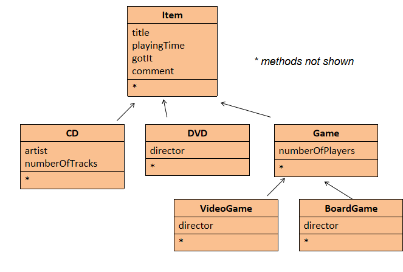
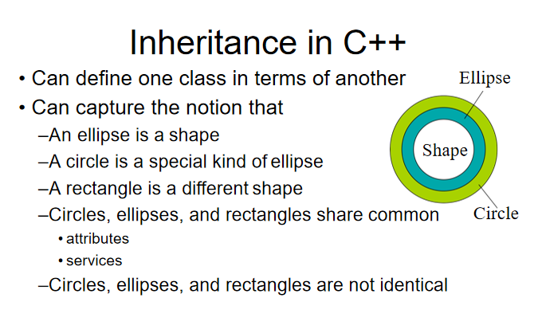
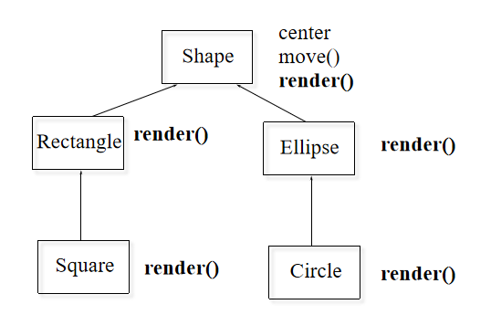
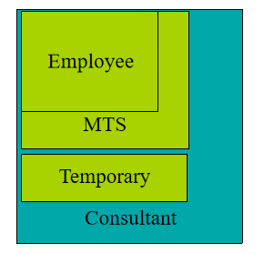
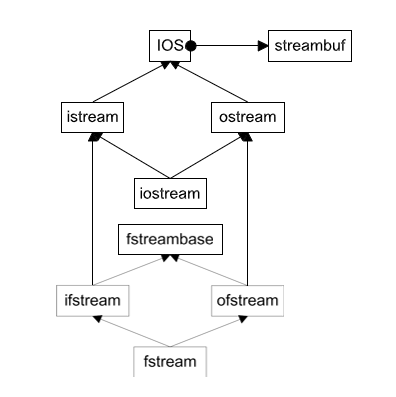

Lecture5: Inheritance
一、简介
本节课主要讲了两种重要机制：继承（Inheritance）和组合（Composition）。
还讲解了C++里头的内联函数（Inline Functions）、标准模板库（STL）的基本概念和使用场景。
二、内联函数（Inline Functions）
1. 内联函数的基本概念
- 定义：内联函数是一种在调用处直接展开函数体的函数，类似于预处理器宏，但消除了函数调用的开销。
- 目的：减少函数调用带来的额外开销（如参数压栈、返回地址推送等），从而提高程序执行效率。
1.1 函数调用的开销
函数调用涉及以下步骤，这些步骤会增加执行时间：
- 推送参数（Push parameters）
- 推送返回地址（Push return address）
- 准备返回值（Prepare return values）
- 弹出所有推送的内容（Pop all pushed）
1.2 内联函数的工作原理
内联函数通过在调用点直接插入函数体代码来避免上述开销。例如：
使用内联函数后：
展开后等价于：
2. 内联函数的实现
- 语法：在函数定义前添加
inline关键字。 - 放置位置：内联函数的定义必须放在头文件中，以便在多个源文件中使用。
- 特点：
- 内联函数的定义不会生成独立的
.obj文件代码，而是作为声明存在。 - 不必担心多重定义问题，因为内联函数没有独立的函数体。
- 内联函数的定义不会生成独立的
示例：
2.1 在头文件中定义
// header.h
inline int f(int i) { return i * 2; }
// main.cpp
#include "header.h"
int main() {
int a = 4;
printf("%d", f(a)); // 输出 8
}
3. 内联函数的优缺点
3.1 优点
- 性能提升：消除函数调用开销，适合小型、频繁调用的函数。
- 类型安全：相比C语言中的宏（如
#define f(a) (a)+(a)），内联函数会检查参数类型。
示例（宏的问题）：
内联函数改进：
3.2 缺点
- 代码膨胀：函数体在每个调用点展开，可能增加代码体积。
- 编译器限制：
- 编译器可能忽略
inline请求（例如函数过大或递归）。 - 递归函数无法内联。
- 编译器可能忽略
4. 内联函数的使用场景
4.1 建议内联的情况
- 小型函数：2-3行代码。
- 频繁调用：如循环中的函数。
4.2 不建议内联的情况
- 大型函数：超过20行。
- 递归函数：无法展开。
4.3 懒人方法
- 全内联：所有函数都声明为
inline。 - 全不内联：完全避免使用
inline。
5. 类中的内联函数
- 自动内联：在类声明中定义的成员函数默认是内联的。
示例：
class Cup {
int color;
public:
int getColor() { return color; } // 自动内联
void setColor(int color) { this->color = color; } // 自动内联
};
- 外部定义：如果在类外定义内联函数，必须在定义前加
inline，且定义需在调用前，保持接口清晰。
示例（避免混乱）：
class Cup {
int color;
public:
int getColor();
void setColor(int color);
};
inline int Cup::getColor() { return color; }
inline void Cup::setColor(int color) { this->color = color; }
三、继承（Inheritance）
1. 继承的基本概念
- 定义：继承允许一个类（派生类/子类）从另一个类（基类/父类）继承属性和方法。
- 目的：实现代码复用，扩展功能。
- 关系：派生类与基类之间是“Is-A”关系（例如，“学生是人”）。
public表示公有继承（还有protected和private继承）。
2. 继承的特性
2.1 构造函数与析构函数
- 构造顺序：基类构造函数先于派生类调用。
- 析构顺序：派生类析构函数先于基类调用。
- 默认调用：如果不显式调用基类构造函数，会调用基类的默认构造函数。
示例：
class Employee {
protected:
std::string m_name, m_ssn;
public:
Employee(const std::string& name, const std::string& ssn)
: m_name(name), m_ssn(ssn) {}
};
class Manager : public Employee {
private:
std::string m_title;
public:
Manager(const std::string& name, const std::string& ssn, const std::string& title)
: Employee(name, ssn), m_title(title) {}
};
2.2 访问控制
| 访问级别 | 基类中定义 | 派生类访问 | 外部访问 |
|---|---|---|---|
| public | 可见 | 可见 | 可见 |
| protected | 可见 | 可见 | 不可见 |
| private | 可见 | 不可见 | 不可见 |
-
继承类型影响：
- 公有继承：基类的
public和protected成员在派生类中保持原访问级别。 - 保护继承：基类的
public和protected变为protected。 - 私有继承：基类的
public和protected变为private。
- 公有继承：基类的
2.3 名称隐藏（Name Hiding）
如果派生类重新定义基类的函数，所有基类中同名的重载函数将被隐藏。
示例：
class Employee {
public:
void print(std::ostream& out) const;
void print(std::ostream& out, const std::string& msg) const;
};
class Manager : public Employee {
public:
void print(std::ostream& out) const; // 隐藏基类的两个print
};
在默认情况下，通过Manager对象只能直接调用Manager类自己定义的print函数。 基类 Employee 中的两个 print 函数都被隐藏了，无法通过 Manager 对象直接使用。
那么基类的 print 函数彻底不能用了吗？
不是的！如果你确实需要调用基类中的
2.4 不被继承的内容
- 构造函数
- 析构函数
- 赋值操作符（operator =）
- 私有数据：存在但不可直接访问。
2.5 公共继承与替代性
公共继承的替代性原则：
- 如果
B是A（B是A的子类），那么在任何需要A的地方都可以使用B。 - 一切对
A成立的属性和行为，对B也必须成立。 - 注意：如果替代性不成立（即
B不能完全替代A），需要谨慎设计继承关系，以免导致逻辑错误。
3. 继承的应用示例
3.1 DoME（Database of Multimedia Entertainment）
这里以简化版的存储CD和DVD信息为例。

- 问题：CD和DVD类有大量重复代码。
- 解决方案：使用继承定义通用基类
Item。
类层次：
class Item {
protected:
std::string title, comment;
int playingTime;
bool gotIt;
public:
void print();
};
class CD : public Item {
private:
std::string artist;
int numberOfTracks;
};
class DVD : public Item {
private:
std::string director;
};
3.2 绘图

- 基类
Shape
class XYPos {...}; // 表示 x, y 坐标的类
class Shape {
public:
Shape();
virtual ~Shape(); // 虚析构函数
virtual void render(); // 虚函数：绘制
void move(const XYPos&); // 非虚函数：移动
virtual void resize(); // 虚函数：调整大小
protected:
XYPos center; // 中心点坐标
};
- 派生类
Ellipse
class Ellipse : public Shape {
public:
Ellipse(float maj, float minr); // 构造函数，接收长轴和短轴
virtual void render(); // 重写绘制函数
protected:
float major_axis, minor_axis; // 长轴和短轴
};
- 派生类
Circle
class Circle : public Ellipse {
public:
Circle(float radius) : Ellipse(radius, radius) {} // 调用基类构造函数
virtual void render(); // 重写绘制函数
private:
double area; //面积
};

- 使用示例
void render(Shape* p) {
p->render(); // 调用正确的 render 函数（动态绑定）
}
void func() {
Ellipse ell(10, 20);
Circle circ(40);
ell.render(); // 调用 Ellipse::render()
circ.render(); // 调用 Circle::render()
render(&ell); // 调用 Ellipse::render()
render(&circ); // 调用 Circle::render()
// render(Shape* p)使用指针调用 render()，
// 通过虚函数机制实现动态绑定，调用对象的实际类型对应的render函数。
}
4. 多态性（Polymorphism）
4.1 上转型（Upcasting）
- 定义：将一个派生类（子类）的对象视为它的基类（父类）对象。
- 应用：在编程中，上转型通常表现为：将派生类对象的指针或引用赋值给基类类型的指针或引用。
- 示例：“学生是人”。学生是人的一个具体类型（派生类），人是一个更一般的类型（基类）。你可以把一个学生看作是一个人，因为学生具备人的一切基本特征。
// Manager 是 Employee 的派生类
Manager Wen("Wen", "444-55-6666", "ZJU");
Employee* ep = &Wen; // 上转型
ep->print(std::cout);
// 调用基类版本，也就是说：
// 调用ep->print(cout);时，会调用基类Employee的print函数，而不是Manager的版本。
- 优缺点：是安全的，因为派生类包含基类的所有属性和行为；但会丢失派生类的特定类型信息。
4.2 虚函数（Virtual Functions）
- 非虚函数：静态绑定，调用类型已知的函数，执行速度快。
- 虚函数：动态绑定，根据对象实际类型调用函数。
- 纯虚函数：没有具体实现的函数声明，目的是为派生类（子类）提供一个必须实现的接口。
示例：
class Shape {
public:
// 这是一个纯虚函数，用 = 0 标记，表示它没有实现体，派生类必须去具体实现它
virtual void render() = 0;
// 这是一个普通的虚函数，没有 = 0，说明它可以有默认实现（尽管这里没有提供具体实现）
virtual void resize();
// 这是一个普通的成员函数，不是虚函数，调用时会根据指针或引用的静态类型（而不是对象的实际类型）决定使用哪个版本。
void move(const XYPos&);
protected:
XYPos center;
};
class Ellipse : public Shape {
public:
// 重写了基类的纯虚函数 render
void render() override;
protected:
float major_axis, minor_axis;
};
- 虚函数表（vtable）
C++ 使用虚函数表（vtable）实现动态绑定：
- 每个类有一个虚函数表，存储该类的虚函数地址。
- 每个对象包含一个指向其虚函数表的指针（vptr）。
- 当调用虚函数时，程序通过 vptr 查找 vtable，调用对应的函数。
示例：在方才绘图的例子中：
Shape类的 vtable 包含：Shape::~Shape()Shape::render()Shape::resize()
Ellipse类的 vtable 包含：Ellipse::~Ellipse()Ellipse::render()Shape::resize()（未重写，继承基类的实现）
-
Circle类的 vtable 包含：Circle::~Circle()Circle::render()Circle::resize()Circle::radius()
-
虚析构函数
为什么需要虚析构函数？
如果基类的析构函数不是虚函数，删除基类指针时只会调用基类的析构函数，可能导致派生类资源未被正确释放。
声明基类的析构函数为 virtual，确保删除基类指针时调用派生类的析构函数。
4.3 抽象基类（Abstract Base Class, ABC）
- 定义：包含纯虚函数（
virtual ... = 0）的类，不能实例化（由于抽象基类中存在未实现的纯虚函数，直接创建抽象基类的对象会导致编译错误）。 - 用途：定义接口，强制派生类实现。
四、组合（Composition）
1. 组合的基本概念
- 定义：通过将对象嵌入另一个对象实现复用。
- 关系：组合表达的是 “Has-A”关系，即一个对象“拥有”另一个对象作为其组成部分。例如，“汽车有引擎”：Car 类可以通过包含一个 Engine 类的对象来表示汽车的引擎部分。
示例：
2. 组合的特性
- 构造顺序：嵌入对象先构造。例如，在创建
Car对象时，Engine对象的构造函数会先被调用。 - 析构顺序：嵌入对象后析构。例如，当 Car 对象销毁时，Engine 对象的析构函数会在 Car 的析构函数之后调用（与构造顺序相反）。
- 访问：通过包含类的接口访问嵌入对象。（嵌入对象通常是
private或protected，以封装实现细节）如果需要外部访问嵌入对象的接口，可以通过包含类的公共方法间接调用。
示例（Savings & Account）：
class Person { ... };
class Currency { ... };
class SavingsAccount {
private:
Person m_saver;
Currency m_balance;
public:
SavingsAccount(const char* name, const char* address, int cents)
: m_saver(name, address), m_balance(0, cents) {}
void print() {
m_saver.print();
m_balance.print();
}
};
五、对象切片（Object Slicing）
1. 对象切片现象
当将派生类对象赋值给基类对象时，会发生对象切片：
- 只有基类的部分被复制，派生类的额外数据被丢弃。
- 虚函数表（vtable）也被替换为基类的 vtable。
示例：
结果：
circ的area属性被切掉，只复制了Ellipse类部分的成员。elly的 vtable 是Ellipse的 vtable，调用elly.render()会执行Ellipse::render()。
2. 使用指针或引用避免切片
使用指针或引用可以避免对象切片：
Ellipse* elly = new Ellipse(20, 40);
Circle* circ = new Circle(60);
elly = circ; // 指针赋值
elly->render(); // 调用 Circle::render()
说明：指针或引用保留了对象的实际类型，调用虚函数时会执行正确的版本。（上面的例子调用Circle::render()）
3. 引用参数的行为
引用参数类似于指针，调用虚函数时会根据对象的实际类型进行动态绑定：
六、函数重写与虚函数
1. 重写的定义
实际上前面已经涉及到了，所谓重写（Overriding），就是指在派生类中重新定义基类的虚函数，提供新的实现：
// 基类
class Base {
public:
virtual void func() { cout << "Base::func()"; }
};
// 派生类
class Derived : public Base {
public:
virtual void func() override { // 使用 override 关键字明确重写
cout << "Derived::func!";
Base::func(); // 调用基类版本
}
};
注意：重写函数可以调用基类的版本，增加新功能而无需重复基类的代码。
在 C++ 中，虚函数（Virtual Function）是支持动态绑定（Dynamic Binding）的函数，用于实现多态。而当基类定义了多个同名虚函数（即重载的虚函数），派生类在重写（override）这些虚函数时，必须小心处理所有重载版本，否则可能导致未重写的版本被隐藏，从而引发意外行为。
比如下面这个代码：
class Base {
public:
virtual void func() { std::cout << "Base::func()" << std::endl; }
virtual void func(int x) { std::cout << "Base::func(int)" << std::endl; }
};
class Derived : public Base {
public:
virtual void func() override { // 只重写了无参数版本
std::cout << "Derived::func()" << std::endl;
Base::func(); // 调用基类的 func()
}
};
int main() {
Derived d;
// 调用 Derived::func()
d.func();
// 编译器报错：no matching function for call to 'Derived::func(int)'
d.func(5);
// 显式调用基类的 func(int)
d.Base::func(5);
}
2. 返回类型放宽
在现代 C++ 中，派生类的虚函数可以返回基类虚函数返回类型的子类（适用于指针或引用类型）：
class Expr {
public:
virtual Expr* newExpr();
virtual Expr& clone();
virtual Expr self();
};
class BinaryExpr : public Expr {
public:
virtual BinaryExpr* newExpr(); // 合法
virtual BinaryExpr& clone(); // 合法
virtual BinaryExpr self(); // 错误：返回类型不是指针或引用
};
七、标准模板库（STL）
- 定义：C++标准库的一部分，提供通用数据结构和算法。
-
组件：
- 容器（Containers）：
vector、list、map等。 - 迭代器（Iterators）：访问容器元素。
- 算法（Algorithms）：排序、搜索等。
- 容器（Containers）：
-
主要容器：
- vector：动态数组。
- list：双向链表。
- map：键值对映射。
-
示例（vector）：
#include <vector>
using namespace std;
int main() {
vector<int> x;
for (int a = 0; a < 1000; a++) {
x.push_back(a);
}
for (auto p = x.begin(); p != x.end(); p++) {
cout << *p << " ";
}
}
八、多重继承（Multiple Inheritance, MI）
1. 多重继承的定义
多重继承是指一个派生类可以同时继承多个基类，从而获得多个基类的属性和行为。
- 特点：派生类继承了所有基类的成员（数据成员和成员函数），可以“混合”多个基类的功能。
- 在课件中的描述：多重继承允许“混搭”（Mix and Match）不同基类的特性，例如一个类可以同时具有
Employee和Temporary的属性。
语法示例：
class Employee {
protected:
string name;
EmpID id;
};
class MTS : public Employee {
protected:
Degrees degree_info;
};
class Temporary {
protected:
Company employer;
};
class Consultant : public MTS, public Temporary {};

具体分析：Consultant 继承了 MTS 和 Temporary，因此拥有：
- `Employee` 的成员：`name` 和 `id`（通过 `MTS` 继承）。
- `MTS` 的成员：`degree_info`。
- `Temporary` 的成员：`employer`。
这体现了多重继承的“混合”能力：Consultant 是一个既是 MTS（技术专家）又是 Temporary（临时工）的类。
类关系：
-
多重继承仍然遵循 Is-A 关系：
Consultant是MTS（技术专家）。Consultant是Temporary（临时工）。
-
但多重继承引入了更复杂的数据布局和潜在问题，需要谨慎设计。
2. 多重继承的数据布局
多重继承会影响对象的内存布局，因为派生类需要容纳多个基类的成员。
数据布局问题示例：
多重继承会“复杂化数据布局”（MI Complicates Data Layouts），这里来一个示例：
class B1 { int m_i; };
class D1 : public B1 {};
class D2 : public B1 {};
class M : public D1, public D2 {};
内存布局：
M 包含两个 B1 的副本：
D1::B1.m_i：来自D1的B1部分。D2::B1.m_i：来自D2的B1部分。
问题：访问 m.m_i 会导致歧义，因为编译器无法确定使用哪个 B1 的 m_i。
代码示例：
void main() {
M m;
m.m_i++; // 错误！歧义：D1::B1.m_i 还是 D2::B1.m_i？
B1* p = new M; // 错误！无法确定指向哪个 B1。
B1* p2 = dynamic_cast<D1*>(new M); // 正确：明确指向 D1 的 B1 部分。
}
- 歧义：
M中有两个B1子对象，导致访问m_i时需要明确指定作用域（如m.D1::m_i）。 - 转换问题：将
M*转换为B1*会失败，因为编译器不知道选择D1的B1还是D2的B1。 - 解决方法：使用
dynamic_cast指定具体路径，或者使用虚拟基类（后文详述）。
复制基类（Replicated Bases）：
- 复制基类通常不是问题，因为
D1和D2使用B1是实现细节。 - 但如果复制导致逻辑混乱（例如，两个
m_i值的语义不一致），需要特别注意。
3. 虚拟基类（Virtual Base Classes）
为了解决多重继承中基类被多次复制的问题，C++ 提供了虚拟基类（Virtual Base Class），确保派生类中只有一个基类副本。
虚拟基类示例：
class B1 { int m_i; };
// virtual
class D1 : virtual public B1 {};
class D2 : virtual public B1 {};
class M : public D1, public D2 {};
void main() {
M m;
m.m_i++; // 正确：只有一个 B1 的 m_i
B1* p = new M; // 正确：只有一个 B1
}
关键点：
- 使用
virtual关键字声明继承（如class D1 : virtual public B1）。 M中只有一个B1子对象，消除了歧义。- 访问
m.m_i或将M*转换为B1*都是合法的。
虚拟基类的实现：
- 间接表示：虚拟基类通过指针间接表示。
- 编译器在派生类中维护一个指向虚拟基类的指针（或偏移量），确保所有派生类共享同一个基类实例。
- 构造顺序：虚拟基类由最底层的派生类（如
M）负责构造，而不是中间类（如D1或D2）。
代价：
- 运行时开销：虚拟基类引入指针间接，增加内存和性能开销。
- 复杂性：
- 虚拟基类的构造函数可能被多次调用（如果不小心设计）。
- 构造顺序复杂：虚拟基类优先于非虚拟基类构造，由最底层的派生类调用。
建议：
不要使用.jpg
4. 协议/接口类（Protocol/Interface Classes）
课件提到协议类作为多重继承的一种安全用法，特别适合定义接口。
协议类的定义：
-
特性：
- 所有非静态成员函数是纯虚函数（
= 0），除了析构函数。 - 虚析构函数为空（
virtual ~ClassName() {}）。 - 无非静态数据成员（只可能有静态成员）。
- 所有非静态成员函数是纯虚函数（
-
作用：定义标准接口，派生类实现具体功能。
Unix 字符设备接口
class CDevice {
public:
virtual ~CDevice();
virtual int read(...) = 0;
virtual int write(...) = 0;
virtual int open(...) = 0;
virtual int close(...) = 0;
virtual int ioctl(...) = 0;
};
分析：
CDevice是一个纯抽象类（接口），没有数据成员，只有纯虚函数。- 派生类（如具体的设备驱动）实现这些函数，提供具体功能。
- 适合多重继承：因为协议类不包含数据成员，复制多个副本不会导致数据冗余或歧义。
为什么安全？
- 协议类没有非静态数据成员，复制基类不会导致内存浪费或逻辑问题。
- 抽象基类（如协议类）可以安全复制，无需虚拟基类。
5. 多重继承的实际应用：IOStreams 包
以 C++ 标准库的 iostream 包为例。

IOStreams 的类层次：
- 基类：
ios，管理流状态（如错误标志、格式化选项）。 - 派生类：
istream：继承ios，处理输入流，关联一个streambuf（缓冲区）。ostream：继承ios，处理输出流，关联一个streambuf。iostream：继承istream和ostream，支持双向流。
问题：复制 streambuf
- 如果
istream和ostream直接继承ios，iostream会包含两个ios和两个streambuf副本。 - 后果：两个
streambuf可能导致数据不一致（如输入和输出缓冲区不同步）。
解决方案：虚拟继承：
class ios { /* 流状态 */ };
class istream : virtual public ios { /* 输入流 */ };
class ostream : virtual public ios { /* 输出流 */ };
class iostream : public istream, public ostream {};
效果：
- 使用 virtual public ios 确保 iostream 中只有一个 ios 和 streambuf 副本。
- 避免了数据冗余和逻辑混乱。
6. 多重继承的复杂性与注意事项
课件在“Complications of MI”部分列出了多重继承的潜在问题，并提供了避免复杂性的建议。
复杂性：
-
代码重复调用：
- 虚拟基类的构造函数可能被多次调用（如果设计不当）。
- 例如，
M构造时，B1的构造函数由M直接调用，而不是D1或D2。
-
名称冲突：
- 不同基类的同名成员可能冲突。
- 解决方法：使用支配规则（Dominance Rule）或显式限定（如
D1::m_i）。
-
构造顺序：
- 虚拟基类的构造由最底层的派生类负责，可能导致初始化顺序难以预测。
- 非虚拟基类按声明顺序构造，虚拟基类优先构造。
-
编译器实现差异：
- 课件提到“编译器对虚拟基类的支持仍不完善”（Compilers are still iffy），可能导致实现依赖性。
建议：
- 谨慎使用多重继承：避免不必要的复杂性。
- 避免菱形继承：菱形继承（如
ios示例）容易导致复制或逻辑问题。 - 优先使用协议类：协议类无数据成员，适合多重继承。
- 选择性使用虚拟基类：
- 如果复制基类无害（如协议类），无需虚拟继承。
- 如果需要共享基类实例（如
iostream的streambuf），使用虚拟继承。
替代方案：
- 组合（Composition）：通过包含对象代替继承（如
Consultant包含MTS和Temporary的实例）。 - 接口（Protocol Classes）：使用纯虚函数定义接口，减少数据成员问题。
九、继承与组合的简单对比
- 继承（Inheritance）：表示“Is-A”关系，例如“学生是人”（
Student是Person的子类）。 - 组合（Composition）：表示“Has-A”关系，例如“汽车有引擎”（
Car包含一个Engine实例）。